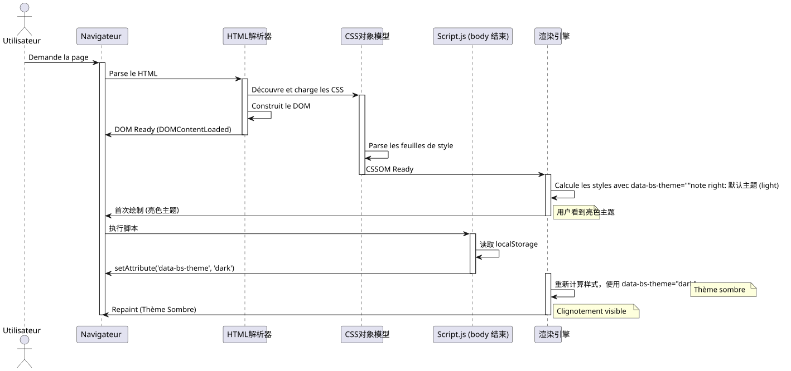

�预加载的艺术：使用 JavaScript 和 CSS 消除主题闪烁（“Flash”）
Publié le 15 November 2025
摘要
在这篇深入的技术文章中，我们探讨如何实现主题选择器（light/dark），而不会出现页面加载时令人讨厌的闪烁效果。我们详细分析浏览器渲染周期、FOUC（未样式内容闪现）的根本原因，并提出一种基于同步预加载的稳健解决方案，位于该`<head>`. 此技术保证了流畅且专业的用户体验。
问题：这个该死的主题闪烁
用户体验的噩梦
想象一下这个场景：您已经花了几个小时为您的网络应用设计一个令人惊艳的暗色主题。颜色完美平衡，对比度最佳，您的用户也喜欢这个选项。但有一个尴尬的问题：每次页面重新加载时，默认的亮色主题会在暗色主题生效之前闪现出一小段时间。
这个视觉闪光虽然短暂（有时少于100毫秒），但对人眼来说立刻可感知，并产生不愉快的体验。对于选择深色主题以获得视觉舒适或无障碍需求的用户而言，这种闪烁甚至可能令人感到疼痛，特别是在光线较暗的环境中。
FOUC：一个老旧的网页问题
此现象是所谓的“无样式内容闪烁”(Flash of Unstyled Content, FOUC)的一种变体，这是一种经典的 Web 开发问题，可追溯到 CSS 的早期时代。当浏览器在未应用 CSS 样式的情况下临时显示 HTML 内容时，就会发生 FOUC，从而出现未样式化内容的闪现。
在我们特定的情况下，我们并不是在说一个完全没有样式的内容，而是一个错误主题的闪光(FOWT) - 内容被设样，但使用了错误的主题。这尤其令人沮丧，因为这表明我们的应用程序 "oublie" 用户的偏好在每次页面加载时。
对质量感知的影响
虽然这是一个技术问题，但它对您的应用程序质量的感知有重要影响：
�缺乏润色: 闪烁让人感觉像是一个未完成或未优化好的应用程序。用户常常将这些小的视觉缺陷与整体缺乏专业性联系起来。
连贯性断裂该应用程序似乎"oublier"用户的偏好，产生了界面与期望之间不同步的感觉。
视觉疲劳对于对光敏感或患有偏头痛的用户来说，这种闪光灯可能不仅仅是一种美观上的不适。
感知性能: 有趣的是，即使你的网站加载速度很快，这种闪烁也可能给人一种应用程序缓慢或不响应的印象。
问题的技术分析
要了解如何解决这个问题，首先要了解它为什么会发生。闪烁是由于网页生命周期中三个关键事件之间的时间偏差导致的：
-
初始的HTML解析: 浏览器读取并分析您的网页结构
-
应用CSS样式: 浏览器应用 CSS 规则并计算视觉渲染
-
JavaScript 的执行您的更改主题的代码正在执行
当事件 n°3（执行 JavaScript）在浏览器已经开始或完成事件 n°2（应用样式）之后到达时，问题就会出现。此时，浏览器已经决定显示哪个主题，而您的代码来得太晚，无法在首次渲染之前影响它。
为什么经典脚本不够？
直观但无效的方法
对开发者来说，最自然的方式是把脚本放在我们……的末尾`<body>`它检查用户首选的主题并应用。这种做法遵循传统的网页最佳实践，建议在页面底部加载脚本以避免阻塞渲染。
// À la fin de <body> - L'APPROCHE INSUFFISANTE
document.addEventListener('DOMContentLoaded', () => {
const theme = localStorage.getItem('preferred-theme');
if (theme === 'dark') {
document.documentElement.setAttribute('data-bs-theme', 'dark');
}
});这种方法看起来一开始很合乎逻辑。我们等待 DOM 准备就绪，然后应用主题。很简单，不是吗？不幸的是，这种简洁掩盖了与浏览器渲染周期时机相关的根本缺陷。
理解DOMContentLoaded事件
事件`DOMContentLoaded`当初始的 HTML 文档被浏览器完全加载并解析时触发，不等待样式表、图片和子框架加载完成。这是一个重要的理解点。
以下是事件的典型序列：
-
浏览器开始下载HTML
-
它在接收HTML的过程中进行分析。
-
他发现了这些标签`<link>`为 CSS 并开始下载它们
-
他发现了标签`<script>`并根据其类型和属性执行它们
-
它构建了DOM（文档对象模型）
-
事件
DOMContentLoaded被触发 -
它继续应用样式并进行布局
-
第一次 绘制 （显示） 发生
-
事件`load`触发当所有资源都已加载
问题在于：在第 6 步（DOMContentLoaded）和第 8 步（首次绘制）之间，浏览器已经决定了如何显示页面。如果你的主题切换脚本在第 6 步执行，那么为避免首次使用默认样式的显示已经太晚了。
渲染阻塞问题
实际上，时间安排更加复杂。现代浏览器使用复杂的优化技术来提升感知性能。他们试图让首次内容绘制（First Contentful Paint）尽可能快速，以便用户能在屏幕上看到一些内容。
CSS 默认是 "render-blocking" 的，这意味着浏览器会等待下载并解析样式表后才进行首次绘制。这是合乎逻辑的：我们不想展示未经样式化的内容。
但这里有个陷阱：当浏览器首次应用这些CSS样式时，它是基于当前DOM的状态来完成的。如果属性`data-bs-theme`尚未在标签上定义`<html>`, 浏览器将应用默认样式（通常是亮色主题。）
接下来，当您的脚本执行并更改此属性时，浏览器必须：
-
重新计算所有受此更改影响的样式
-
如有必要，重新布局
-
重新油漆受影响的元素
这个重新计算和重新绘制的过程是导致可见闪烁的原因。
问题可视化
为了更好地理解这个有问题的序列，让我们检查一个详细的序列图 :

这个图表清楚地说明了问题：首次绘制发生在我们的脚本有机会设置正确主题之前。随后的重绘导致了可见的闪烁。
无效的解决方案尝试
已经尝试了多种方法来解决这个问题，但大多数都有各自的缺点：
方法 1 : 在加载前隐藏内容
body {
opacity: 0;
transition: opacity 0.3s;
}
body.loaded {
opacity: 1;
}这种方法会在JavaScript设置正确主题之前隐藏所有内容。问题是什么？这会人为地延迟内容的显示，使网站感觉更慢。此外，如果JavaScript被禁用，用户完全看不到任何内容！
方法 2：使用加载器/旋转器
类似于方法1，但带有加载指示器。这掩盖了问题，但未提升实际性能，并增加了不必要的感知延迟。
方法 3 : 默认使用深色主题
一些开发者在 CSS 中将深色主题设置为默认。这可以避免深色主题用户出现闪烁，但会为浅色主题用户产生相反的问题！
这些方法都不令人满意，因为它们治疗的是症状而不是问题的根本原因。
真正的解决方案：更早行动
解决此问题的关键是要意识到我们必须设置该属性。data-bs-theme 之前在浏览器开始应用 CSS 样式之前。这意味着我们的脚本必须在页面生命周期中更早地执行，而这正是我们将在下一节中探讨的内容。
解决方案：预加载（Early Loading）
基本原则
解决我们闪烁问题的优雅方案基于一个简单却强大的原则:同步应用程序的状态与浏览器渲染进程与其等待页面加载后再设置主题，我们应该立即设置它。期间加载时，甚至在 CSS 样式被应用之前。
此方法在网页开发术语中被称为“Early Loading”或“Synchronous Preloading”。其想法是在页面生命周期中尽可能早地执行我们的主题检测逻辑，最好是在标签中`<head>`, 甚至在浏览器开始下载 CSS 文件之前。
为什么 <head> 是理想的位置？
Le `<head>`HTML 文档由浏览器从上到下依次处理。每个元素按照其出现的顺序进行处理。此特性对我们的解决方案至关重要。
当浏览器遇到一个标签时`<script>`在`<head>`无属性`async` ou defer, il :
-
中断 HTML 解析
-
下载脚本（如果外部）或 床（如果内联）
-
立即执行脚本
-
继续解析HTML
此行为通常被视为性能问题（因此通常建议将脚本放在页面底部），在此特定情况下成为我们的盟友。通过将我们的主题检测脚本放在开头的`<head>`, 我们保证它在浏览器遇到标签之前执行`<link>`我们的样式表。
三层解决方案架构
我们的完整解决方案由三个相互依赖的层组成，每一层都发挥着特定的作用：
�层 1 : 持久化 (localStorage) 此层负责在会话之间保存和恢复用户的选择。
第二�层：早期同步 (内联脚本在 <head> 中) 此层在初始渲染前将应用程序的状态与 DOM 同步。
�层3：响应式样式（带属性选择器的CSS） 此层根据第 2 层定义的状态来设置视觉样式。
现在让我们详细探索每一层。
步骤 1：保存用户的选择
localStorage：您的持久性内存
Le localStorage`这是一个 Web Storage API，允许以持久化方式在浏览器中存储键值对。与 cookie 不同，存储的数据`localStorage:
-
永远不会自动发送到服务器
-
它们具有更大的存储容量（通常为5-10MB）
-
没有到期日期（持续至显式删除）
-
仅限于协议和域（同源策略）
对于我们的用例，`localStorage`完美，因为：
-
我们不需要与服务器共享此信息
-
我们希望偏好能够永远持续
-
所需的存储空间非常小（几个字节）
主题备份的实现
以下是我们在用户更改主题时保存其选择的方法：
// Fonction complète pour changer le thème
function setTheme(newTheme) {
// Validation de l'entrée
if (!['light', 'dark', 'auto'].includes(newTheme)) {
console.error('Thème invalide:', newTheme);
return;
}
try {
// Sauvegarde dans localStorage
localStorage.setItem('preferred-theme', newTheme);
// Application immédiate dans le DOM
document.documentElement.setAttribute('data-bs-theme', newTheme);
// Dispatch d'un événement personnalisé pour notifier d'autres composants
window.dispatchEvent(new CustomEvent('theme-changed', {
detail: { theme: newTheme }
}));
console.log('Thème changé:', newTheme);
} catch (error) {
console.error('Erreur lors de la sauvegarde du thème:', error);
// Fallback : on applique quand même le thème visuellement
document.documentElement.setAttribute('data-bs-theme', newTheme);
}
}
// Exemple d'utilisation avec un bouton
document.getElementById('theme-toggle').addEventListener('click', () => {
const currentTheme = document.documentElement.getAttribute('data-bs-theme') || 'light';
const newTheme = currentTheme === 'light' ? 'dark' : 'light';
setTheme(newTheme);
});错误案例管理
至关重要的是处理以下情况：localStorage`不可用或无法访问。 几种情况可能会阻止访问`localStorage:
严格的私密导航Safari 在无痕浏览模式下抛出异常`QuotaExceededError`在写入尝试期间`localStorage`.
隐私设置: 一些浏览器或隐私扩展可以阻止访问至`localStorage`。
域限制 : Le `localStorage`不可通过协议访问`file://`在某些浏览器中。
存储空间已满虽然�罕见，但存储空间可能会被完全填满。
这就是为什么我们的代码使用一个块`try…catch`为优雅地处理这些情况，即使持久性不可用，也继续提供主题切换功能。
高级持久化策略
对于更复杂的应用，您可以考虑采用额外的策略：
服务器同步(可选)
async function setTheme(newTheme) {
// Sauvegarde locale immédiate
localStorage.setItem('preferred-theme', newTheme);
document.documentElement.setAttribute('data-bs-theme', newTheme);
// Synchronisation serveur en arrière-plan (si l'utilisateur est connecté)
if (userIsAuthenticated()) {
try {
await fetch('/api/user/preferences', {
method: 'POST',
headers: { 'Content-Type': 'application/json' },
body: JSON.stringify({ theme: newTheme })
});
} catch (error) {
console.warn('Échec de la synchronisation serveur:', error);
// L'échec n'est pas critique car la préférence est déjà sauvegardée localement
}
}
}此方法可在已登录用户的设备之间同步偏好设置，同时保持本地响应的即时性。
步骤 2：预加载脚本位于 `<head>
解决方案的核心
这里正是魔法真正发挥作用的地方。我们将放置一个小脚本。内联直接在我们的`<head>`, 在我们所有的标签之前`<link>`样式表的。此脚本故意极简、自包含，并且设计为尽可能快速执行。
<!DOCTYPE html>
<html lang="fr">
<head>
<meta charset="UTF-8">
<meta name="viewport" content="width=device-width, initial-scale=1.0">
<title>Mon Site Incroyable</title>
<!-- ==========================================
NOTRE SCRIPT MAGIQUE DE PRÉ-CHARGEMENT
Ce script DOIT être le premier élément
dans le <head> après les meta tags
========================================== -->
<script>
// IIFE pour ne pas polluer le scope global
(function() {
'use strict';
try {
// Lecture de la préférence sauvegardée
const savedTheme = localStorage.getItem('preferred-theme');
// Si une préférence existe, on l'applique immédiatement
if (savedTheme) {
document.documentElement.setAttribute('data-bs-theme', savedTheme);
}
// Optionnel : Détecter la préférence système si aucune sauvegarde
else if (window.matchMedia && window.matchMedia('(prefers-color-scheme: dark)').matches) {
document.documentElement.setAttribute('data-bs-theme', 'dark');
}
// Sinon, le thème par défaut du CSS sera utilisé (généralement 'light')
} catch (error) {
// En cas d'erreur (localStorage bloqué, etc.), on log discrètement
// et on laisse le thème par défaut s'appliquer
console.warn('Impossible de charger la préférence de thème:', error);
}
})();
</script>
<!-- FIN DU SCRIPT MAGIQUE -->
<!-- Les feuilles de style sont chargées APRÈS le script -->
<link rel="stylesheet" href="css/bootstrap.min.css">
<link rel="stylesheet" href="css/styles.css">
<!-- Autres ressources du head -->
<link rel="icon" href="favicon.ico">
</head>
<body>
<!-- Contenu de la page -->
</body>
</html>脚本解剖：每一行都很重要
让我们逐行分析这个脚本，以理解每一个设计决策：
IIFE（立即调用函数表达式）
(function() {
// ...
})();此结构创建了一个立即执行的函数。为什么？为了将我们的变量隔离在局部作用域中，以免污染全局作用域。即使我们只使用了`const`(它具有块级作用域)，IIFE 是一种良好实践，能够使我们的意图更清晰并防止潜在的命名冲突。
严格模式
'use strict';此指令启用 JavaScript 严格模式，其： - 禁止使用未声明的变量 - 为危险操作生成错误 - 改善某些 JavaScript 引擎的性能
对于像这样的关键脚本，我们想要最大的安全性。
try…catch 块
try {
// Code principal
} catch (error) {
console.warn('Impossible de charger la préférence de thème:', error);
}此块绝对至关重要。它保证如果出现问题（如 localStorage 被阻塞、语法错误等），我们的脚本将不会阻止整个页面的加载。使用`console.warn`而不是`console.error`表明这是一个非关键问题。
读取 localStorage
const savedTheme = localStorage.getItem('preferred-theme');此行在某些上下文（Safari 的严格私人浏览）下可能会引发异常。因此它位于一个 try…catch 块中。
条件应用
if (savedTheme) {
document.documentElement.setAttribute('data-bs-theme', savedTheme);
}我们仅在找到已保存的主题时才应用该主题。否则，我们让 CSS 使用其默认主题。这种方法比在 JavaScript 中硬编码的默认值更稳健。
系统偏好检测（奖励）
一种可选但优雅的改进是，在用户尚未在你的应用中做出明确选择时，检测其操作系统的主题偏好：
else if (window.matchMedia && window.matchMedia('(prefers-color-scheme: dark)').matches) {
document.documentElement.setAttribute('data-bs-theme', 'dark');
}此功能使用媒体查询`prefers-color-scheme`� 查询系统。在 macOS、Windows 10+、iOS 和现代 Android 上，此查询会返回用户的系统偏好设置。
优势： - 个性化体验，从首次访问开始 - 与用户系统环境一致 - 首次访问不需要存储
考虑： - 并非所有浏览器都支持此功能（但自2020年以来支持情况非常好） - 验证`window.matchMedia`确保兼容性 - 用户始终可以覆盖此选择
性能：为什么这个脚本很快
我们的预加载脚本设计为极速：
最小尺寸大约 300 字节未压缩，200 字节压缩。与任何图片或 JavaScript 库相比，这可以忽略不计。
内联: 不需要额外的 HTTP 请求。脚本在 HTML 中，因此它立即可用。
简单的同步操作从 localStorage 中读取键（超快操作）并修改 DOM 属性（浏览器原生操作）。
无依赖没有框架，没有库，只有原生 JavaScript。没有启动时间，没有依赖解析。
单次执行此脚本在加载时仅执行一次。没有事件监听器，没有循环，没有复杂的计算。
实际上，在现代硬件上，该脚本的执行时间不到1毫秒，这是一个无法感知的时间，对页面加载性能没有任何影响。
在`<head>`中的最佳放置
元素在…中的顺序`<head>`是 重要的。 这是 顺序 推荐 :
<head>
<!-- 1. Métadonnées critiques -->
<meta charset="UTF-8">
<meta name="viewport" content="width=device-width, initial-scale=1.0">
<!-- 2. Notre script de pré-chargement (IMMÉDIATEMENT après les meta) -->
<script>
(function() { /* notre code */ })();
</script>
<!-- 3. Titre de la page -->
<title>Mon Site</title>
<!-- 4. Feuilles de style -->
<link rel="stylesheet" href="styles.css">
<!-- 5. Autres ressources (fonts, favicons, etc.) -->
<link rel="preconnect" href="https://fonts.googleapis.com">
<link rel="icon" href="favicon.ico">
<!-- 6. Autres scripts avec defer ou async -->
<script src="app.js" defer></script>
</head>这个命令保证：
-
字符集在任何文本处理之前被定义
-
我们的脚本在加载CSS之前执行
-
CSS 会随后被加载，并直接应用正确的主题
-
其他非关键资源最后加载
步骤 3：CSS属性选择器的强大功能
Bootstrap 5 主题系统
Bootstrap 5 引入了一种基于 CSS 自定义属性（CSS 变量）和属性选择器的优雅主题管理系统。此系统使用属性。data-bs-theme`在元素上<html>`为了确定应用哪一组颜色变量。
这个系统的美在于其简单性：与其加载不同的样式表或在成千上万的元素上切换类，不如我们只需在单个元素上更改一个属性，然后CSS通过级联处理其余部分。
主题系统的CSS结构
以下是实现强健主题系统的完整 CSS 结构：
/**
* SYSTÈME DE THÈME COMPLET
* Utilise les Custom Properties CSS pour une maintenance facile
*/
/* ============================================
THÈME PAR DÉFAUT (LIGHT)
Défini sur :root pour être le fallback
============================================ */
:root {
/* Couleurs de base */
--color-primary: #0d6efd;
--color-secondary: #6c757d;
--color-success: #198754;
--color-danger: #dc3545;
--color-warning: #ffc107;
--color-info: #0dcaf0;
/* Couleurs de fond */
--bg-primary: #ffffff;
--bg-secondary: #f8f9fa;
--bg-tertiary: #e9ecef;
/* Couleurs de texte */
--text-primary: #212529;
--text-secondary: #6c757d;
--text-tertiary: #adb5bd;
/* Couleurs de bordure */
--border-color: #dee2e6;
--border-color-subtle: #e9ecef;
/* Couleurs d'ombre */
--shadow-sm: rgba(0, 0, 0, 0.075);
--shadow-md: rgba(0, 0, 0, 0.15);
--shadow-lg: rgba(0, 0, 0, 0.25